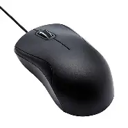
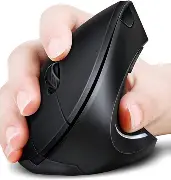
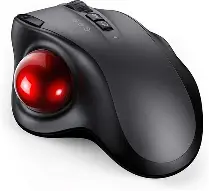

🖱️ Mouse - Your Precision Pointer
The mouse is a pointing device that translates your hand movements into cursor movements on screen. It's essential for navigating graphical user interfaces, selecting items, and performing actions. Mice come in various types with different sensors, buttons, and ergonomics.
DPI (Dots Per Inch) measures sensitivity — higher DPI means faster cursor movement. Sensor types include optical (LED) and laser (more sensitive on various surfaces). Buttons range from basic left/right/scroll to programmable multi-button designs for gaming and productivity.
Basic Wired Mouse
Purpose: General computing, office work, reliability
Basic wired mice are simple, reliable, and affordable. They connect via USB and require no batteries. They're the standard mouse for offices, schools, and home computers with a simple 3-button (left, right, scroll wheel) design.

| Connection | Wired USB |
|---|---|
| Sensor | Optical |
| DPI | 800-1600 |
| Buttons | 3 (Left, Right, Scroll) |
| Target Users | Office workers, students, general use |
| Advantages | Affordable, reliable, no batteries |
| Limitations | Cable drag, basic features |
Wireless Mouse
Purpose: Portability, clean desk, multi-device
Wireless mice offer freedom from cables, making them ideal for laptops, travel, and clean desk setups. They connect via Bluetooth or 2.4GHz USB receiver. Modern wireless mice have excellent battery life and low latency.
.webp)
| Connection | Bluetooth 5.0+, 2.4GHz |
|---|---|
| Sensor | Optical / Laser |
| DPI | 1000-4000 |
| Battery Life | 30 days - 2 years |
| Target Users | Laptop users, travelers, minimalists |
| Advantages | No cable, portable, clean |
| Limitations | Battery, potential latency, cost |
Gaming Mouse
Purpose: Precision, fast response, customization
Gaming mice are designed for competitive and casual gamers. They feature high-DPI sensors, low-latency connections, programmable buttons, RGB lighting, and ergonomic shapes for different grip styles (claw, palm, fingertip).
.webp)
| Connection | Wired USB / Wireless |
|---|---|
| Sensor | Optical (high-end) |
| DPI | 800-26000+ |
| Polling Rate | 1000Hz (1ms) - 8000Hz |
| Buttons | 5-12+ programmable |
| Target Users | Gamers, esports players |
| Advantages | Precision, fast, customizable |
| Limitations | Expensive, often heavy |
Ergonomic Mouse
Purpose: Comfort, reduced wrist strain, long sessions
Ergonomic mice are designed to reduce wrist and hand strain by promoting a more natural hand position. They include vertical mice, trackballs, and contoured shapes that support the hand and reduce the risk of repetitive strain injuries.

| Type | Vertical / Trackball / Contoured |
|---|---|
| Connection | Wired or Wireless |
| DPI | 800-4000 |
| Target Users | Office workers, programmers, designers |
| Advantages | Reduces strain, comfortable, promotes better wrist posture |
| Limitations | Requires adjustment period, expensive |
Trackball Mouse
Purpose: Precision, limited desk space, accessibility
Trackball mice use a stationary ball that you rotate with your fingers or thumb to move the cursor. They require no desk space for movement, making them ideal for tight spaces. They're also great for users with limited hand mobility.

| Type | Thumb-operated / Finger-operated |
|---|---|
| Connection | Wired or Wireless |
| DPI | 400-3200 |
| Buttons | 3-6 |
| Target Users | Designers, CAD users, accessibility |
| Advantages | No desk space needed, precise, accessible |
| Limitations | Learning curve, less common |
Mouse Grip Styles
| Grip Style | Description | Best For |
|---|---|---|
| Palm Grip | Whole hand rests on the mouse | Comfort, office work |
| Claw Grip | Fingers arched, palm touches the back | Gaming, quick movements |
| Fingertip Grip | Only fingertips touch the mouse | Precision, fast flicks |